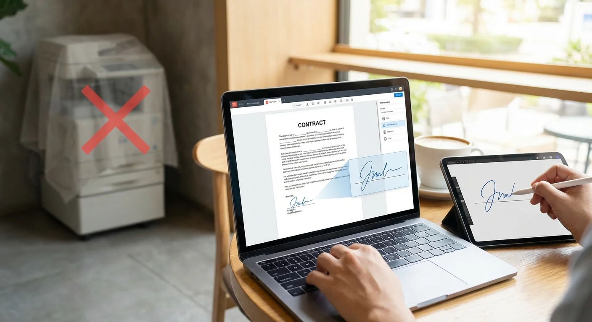

Someone just emailed you a contract, lease agreement, or tax form as a PDF. They need it signed and returned today. Your first instinct might be to find a printer, but there is a much faster way.
The old workflow of print → sign → scan → email is slow, wasteful, and frankly unnecessary in 2026. Whether you are on a laptop at a coffee shop or working from home without a printer, you can sign any PDF in under a minute using free tools.
In this guide, we will walk through the best free methods to sign a PDF online, compare the most popular tools, and show you how to create a signature that actually looks handwritten — not like a typed font pretending to be one.
{kind=link}

Why You Should Stop Printing PDFs to Sign Them
Before we get into the how, let us talk about the why. The print-sign-scan method has several real problems:
- Quality loss: Scanning introduces noise, skew, and compression artifacts. Your clean PDF becomes a blurry image.
- File size bloat: A scanned PDF is often 5-10x larger than the original because it converts vector text into a raster image.
- No searchable text: Once scanned, the text in your PDF is no longer selectable or searchable.
- Time waste: The round-trip takes 10-15 minutes minimum. A digital signature takes 30 seconds.
By signing digitally, you keep the original PDF quality intact and just add your signature as an overlay — exactly like placing a sticker on a page.
The Best Free Method: Transparent PNG + PDF Reader
After testing dozens of approaches, the cleanest and most professional method is a two-step process:
- Create a transparent signature image (PNG with no background)
- Place it into your PDF using a free reader or editor
This approach works because the transparent PNG floats over the document text and lines, just like real ink on paper. There is no white box around your signature, no awkward cropping — just a clean, professional result.
Why transparent PNG is the key
- No white box: A JPG signature always has a white rectangle around it. PNG with transparency blends seamlessly.
- Reusable: Save your signature PNG once and use it on every document going forward.
- High resolution: Unlike drawing directly in a PDF tool, a dedicated signature generator captures pressure and stroke detail.
Step-by-Step: Sign a PDF in Under 60 Seconds
Step 1: Create Your Signature
Go to Signature Sketch in your browser. Draw your signature on the canvas using your mouse, trackpad, or touchscreen. Choose your preferred ink color (black or blue).
Click "Download PNG". Your signature is saved as a transparent PNG file — no account or sign-up required.
Step 2: Open Your PDF
Open the PDF you need to sign. You can use any of these free tools:
- Adobe Acrobat Reader (Free) — Windows & Mac. Use "Fill & Sign" → "Add Image".
- Preview — Built into every Mac. Use Markup toolbar → Signature or drag the PNG in.
- Microsoft Edge — Open the PDF in Edge, click "Add text" or use the draw tool.
- Browser-based editors — Tools like Smallpdf or ILovePDF let you upload and sign without installing anything.
Step 3: Place Your Signature
Insert your transparent PNG signature image onto the signature line. Resize it to fit naturally. Because the background is transparent, it will sit cleanly over the document text and lines.
Step 4: Save and Send
Save the PDF (File → Save or Export). The original document quality is preserved — no scanning artifacts, no file size bloat. Email it back or upload it to your portal.
Free PDF Signing Tools Compared
Not all PDF signing tools are created equal. Here is how the most popular free options stack up:
| Tool | Platform | Signature Quality | Cost |
|---|---|---|---|
| Signature Sketch + Acrobat Reader | Any (Web + Desktop) | Excellent (Transparent PNG) | Free |
| Adobe Acrobat Reader "Fill & Sign" | Windows, Mac | Good (Built-in draw tool) | Free |
| Mac Preview | Mac only | Good (Trackpad capture) | Free (Built-in) |
| Smallpdf | Web | Basic (Draw or type) | Free (2/day limit) |
| DocuSign | Web, Mobile | Basic (Typed font) | Free trial, then paid |
The key difference is signature quality. Most built-in PDF tools offer a basic drawing canvas or a typed font that looks obviously digital. By creating your signature separately with a dedicated tool, you get realistic stroke variation and a transparent background that looks genuinely handwritten.
Pro Tips for Professional-Looking PDF Signatures
- Sign quickly: A fast, confident stroke looks more natural than a slow, careful one. Do not try to draw your signature perfectly — real signatures are slightly messy.
- Use blue ink for contracts: Blue signatures signal "original document" and stand out from black printed text. Learn why blue ink matters.
- Save your signature file: Keep your transparent PNG in a dedicated folder. You will use it again and again.
- Match the signature line size: Resize your signature to roughly fill the signature line without overflowing. A signature that is too large looks unprofessional.
- Add the date: Many documents require a date next to the signature. Use the PDF tool's text feature to type the date rather than handwriting it.
Are Electronic Signatures on PDFs Legally Valid?
Yes, in the vast majority of cases. Electronic signatures have been legally recognized for over two decades:
- United States: The ESIGN Act (2000) and UETA make electronic signatures legally equivalent to handwritten ones for most transactions.
- European Union: The eIDAS Regulation recognizes electronic signatures across all EU member states.
- United Kingdom: The Electronic Communications Act 2000 provides legal standing for e-signatures.
- Canada, Australia, and most other countries have similar legislation.
Exceptions: Certain documents like wills, property deeds, court orders, and some government forms may still require a physical "wet ink" signature. When in doubt, check the specific requirements of the document or institution.
Frequently Asked Questions
Can I sign a PDF on my phone?
Yes. Create your signature on Signature Sketch using your phone's touchscreen (your finger works as a stylus), download the PNG, then use your phone's built-in markup tools or a free app like Adobe Acrobat Reader to place it on the PDF.
What if the PDF is "locked" or "protected"?
Some PDFs have form fields specifically for signatures — these are designed to be filled in even when the document is protected. If the PDF is fully locked and has no form fields, you may need to contact the sender and ask for an unlocked version or a version with signature fields enabled.
Is a typed name the same as a signature?
Legally, a typed name can constitute an electronic signature if there is intent to sign. However, a handwritten-style signature carries more weight in terms of perceived authenticity and professionalism. Recipients are far less likely to question a realistic handwritten signature.
Do I need to pay for Adobe Acrobat Pro?
No. The free Adobe Acrobat Reader includes "Fill & Sign" functionality that lets you add images (your signature PNG) to any PDF. You do not need the paid Pro version for basic signing.
Create Your Signature Now
Draw your signature, download the transparent PNG, and sign your PDF in seconds. No account needed.
Start Drawing Now